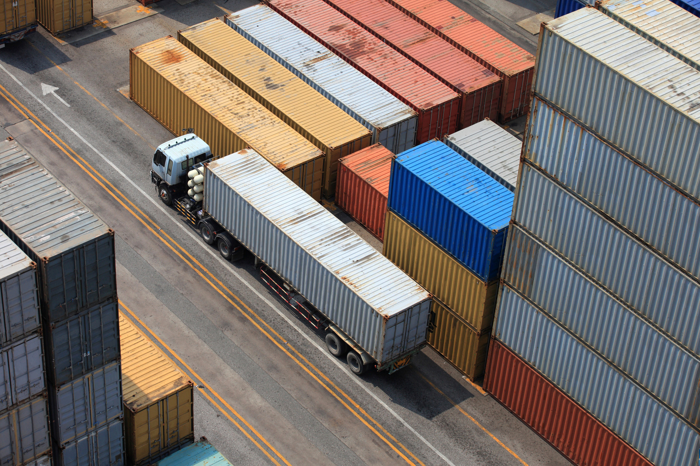

1. Cek pengalaman & legalitasnya
Forwarder yang udah lama handle rute Tiongkok–Indonesia biasanya lebih paham regulasi bea cukai & pajak impor. Cek izin usaha resminya juga — biar nggak ketemu yang fiktif.

Rute yang relevan
Tiongkok → Indonesia
Pengalaman ruteSudah sering handle jalur yang sama
Paham regulasiBea cukai dan pajak impor
Izin usaha resmiPastikan legal, aktif, dan dapat dicek